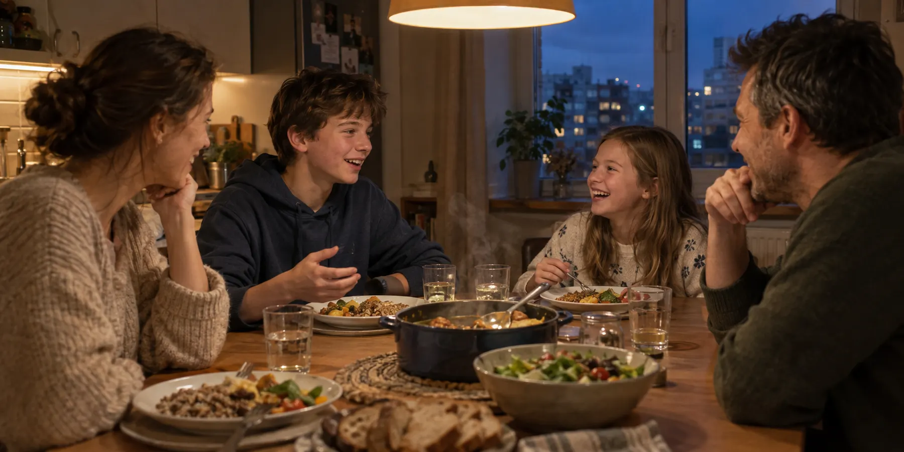

Для родителей школьников 5–9 классов
Не проверяйте уроки — будьте в курсе
Ребёнок читает параграф и отвечает на 15 вопросов в Telegram или MAX. Вам приходит короткое сообщение: тема понята или какие вопросы стоит обсудить.
3 теста бесплатноНичего не нужно устанавливатьДо трёх детей в одной подписке
Почему зимой у моря обычно теплее, чем в глубине материка?
- AНад морем чаще дуют сильные ветры
- BВода остывает медленнее, чем суша
- CМорская вода не замерзает никогда
- DНад морем солнце светит дольше
Верно! Вода нагревается и остывает медленнее суши и зимой отдаёт тепло воздуху.
География · Климат
Тема освоена
1 вопрос стоит повторить
🗺️ География · Маша, 7 класс
Климат. Тест пройден: 14 из 15
Обсудить можно 1 вопрос →
Пример сообщения. Имя и вопросы выдуманы.
Знакомый разговор?
Уроки сделал?
Да.
А параграф прочитал?
Прочитал.
И про что он?
Ну… про климат.
Чтобы проверить по-настоящему, нужно самому прочитать параграф. В 21:47. После работы.
- Предмет давно забыт. Спросить можно, а объяснить — уже сложно.
- Проверка превращается в допрос. Ребёнок защищается, вы раздражаетесь.
- Не проверить — тоже плохо. Остаётся тревога: а он точно разобрался?
Можно иначе. Тот же вечер — на два часа раньше.
Как это работает
Один параграф. Один тест. Итог — вам.
Ребёнок занимается сам. Вы узнаёте результат, не открывая учебник.
-
19:30
Читает параграф
Сначала учебник, потом тест. Тест — это проверка после чтения, готовых ответов заранее нет.
-
19:50
Отвечает на 15 вопросов
Четыре варианта, один верный. Один вопрос — один экран. Ни паролей, ни почты ребёнку не нужно.
-
19:58
Сразу видит, где ошибся и почему
После каждого ответа — короткое объяснение. Ошибка — это подсказка, что повторить. Тест можно пройти ещё раз.
-
20:05
Вам приходит сообщение
В Telegram или MAX: имя, предмет, тема, сколько верных ответов. Если ошибок одна–три — ещё и сами вопросы с правильными ответами.

20:10 Ужин. Можно обсудить один вопрос — или просто поговорить о чём-то другом.
Вся проверка — одно сообщение
Не журнал и не статистика. Короткий итог в чате, который у вас и так открыт. Читать — полминуты.
- 1Кто, по какому предмету и параграфу
- 2Сколько верных — без двоек и «не справился»
- 3Готовая тема для разговора. Вспоминать предмет не нужно
Если ошибок нет или их больше трёх, приходит короткая сводка без списка вопросов. Сообщение получают все привязанные родители.
Вместо пересказа параграфа — разговор о двух вопросах. Или о чём-то совсем другом.
Методика
15 вопросов, которые проверяют понимание, а не память
Каждый тест собран под конкретный параграф. Чтобы ответить, нужно разобраться в теме — угадать или запомнить порядок не получится.
- 1
Вопрос сформулирован заново. Это не копия вопросов из конца параграфа.
- 2
Неверные варианты похожи на правду. Это типичные ошибки, а не нелепые ответы, которые легко отбросить.
- 3
Правильный не выдаёт себя формой. Все варианты одной длины и одного стиля.
В жаркий день мокрое полотенце высохло быстрее, чем в прохладный. Какое объяснение верное?
- AЧастицы воды становятся легче и сами поднимаются вверх2
- BПритяжение между частицами воды полностью исчезает
- CЧастицы воды движутся быстрее и чаще покидают поверхность4
- DВода при нагревании превращается в другое вещество3
Верно! При нагревании частицы движутся быстрее, и больше их вылетает с поверхности — испарение ускоряется.
5- 4
Позиции правильных ответов перемешаны. «Всегда второй» не сработает.
- 5
После ответа — объяснение. Ребёнок не просто узнаёт результат, а понимает почему.
- 6
Подсмотреть нельзя. Ответы проверяет сервис, а не телефон.
Четыре уровня понимания
- ЗнатьПонятия, термины, факты
- СвязыватьПричины, следствия, сравнения
- ПрименятьНовая ситуация, которой нет в учебнике
- Делать выводСамое точное объяснение
Вопросы каждого теста распределены по всем четырём уровням. Поэтому «14 из 15» — это понимание темы, а не удача.
Каждая попытка — новая
Для каждого параграфа подготовлен банк из 18–24 вопросов. В попытку попадают 15 из них в случайном порядке. Пройти тест ещё раз — значит снова подумать, а не вспомнить, где стояла галочка.
Вопросы составлены самостоятельно и не копируют учебники. Сервис не связан с Минпросвещения России, авторами и издателями учебников.
Ребёнку
Ошибиться здесь не страшно
Мы сделали тест таким, чтобы ребёнок проходил его сам — без нервов и без ощущения, что за ним следят.
- Без таймера. Можно думать столько, сколько нужно.
- Без двоек в журнал. Это тренировка, а не контрольная.
- Ошибка — подсказка. Сразу видно правильный ответ и почему он верный.
- Можно ещё раз. Пройти тему повторно и дойти до 100 %.
- Одна тема. Проверяется один параграф, а не весь предмет сразу.
- В своём телефоне. Без паролей и почты — выбрал класс и начал.
Какая часть растения поглощает воду из почвы?
BКорневые волоскиВерно
Корневые волоски увеличивают поверхность корня и всасывают воду с растворёнными веществами.
Кто в Древнем Риме избирал консулов?
AСенатДавай закрепим
Консулов избирали граждане на народном собрании. Сенат давал советы и управлял казной.
Так выглядит ошибка в Параграfиксе. Без красного цвета и без «неправильно!».
Помогаем разобраться самому, а не сделать урок за ребёнка.
Честно
Мы честно говорим, чего не делаем
Мы не обещаем отличную учёбу. Мы обещаем, что каждый вечер вы будете знать, разобрался ли ребёнок с темой.
Подключение
Старт за две минуты
- 1
Откройте бота
В Telegram или MAX. Ничего устанавливать не нужно.
- 2
Выберите роль
«Я родитель» — подтвердите почту кодом. Ребёнок выбирает «Я ученик» и свой класс.
- 3
Свяжите аккаунты
Покажите ребёнку QR-код или примите его запрос по почте. С этого момента итоги приходят вам.
Без вашего согласия к вам никто не привяжется. QR-код действует 10 минут и срабатывает один раз. Приложение открывается только из мессенджера — посторонний по ссылке ничего не увидит.
Цена
Сначала — бесплатно
Попробуйте на трёх параграфах. Если понравится — одна подписка на всю семью.
Ребёнок не платит сам. Когда бесплатные тесты закончатся, он попросит вас в чате — и вы решите.
199 ₽ в месяц
после трёх бесплатных тестов
Это около 6,6 ₽ в день — на всех детей сразу
- Тесты без ограничений по всем доступным параграфам
- До трёх детей в одной подписке
- Итог каждого теста — вам в чат
- Повторные попытки без ограничений
Карта для бесплатных тестов не нужна. Подписку можно отменить в профиле.
Вопросы и ответы
Вопросы
Уроки — в курсе. Вечер — ваш.
Ребёнок проходит тест по параграфу. Вам приходит итог. Всё остальное время — для семьи.
🗺️ Маша · География
Тема освоена
3 теста бесплатно. Откройте бота и выберите: родитель или ученик.